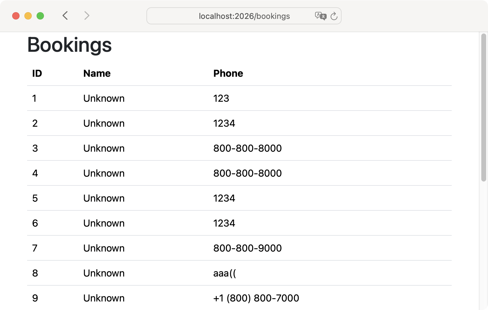
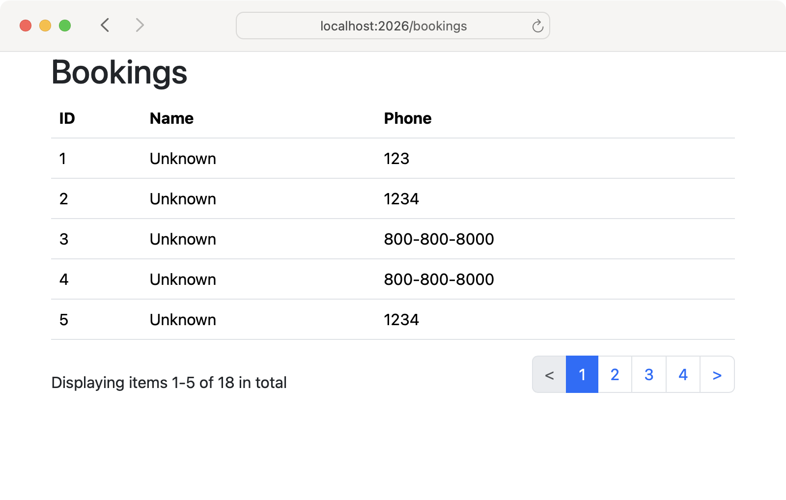

<p>We want admins to see all the bookings in the database:</p>

<ol style="padding-left: 0; list-style-position: inside">
  <li style="margin-top: 0.75rem"><a href="#"><span class="badge rounded-pill bg-secondary-subtle">▶︎</span></a> Add a controller with an action to load all the bookings.</li>
  <li style="margin-top: 0.75rem"><a href="#"><span class="badge rounded-pill bg-primary">▶︎</span></a> Add a view to display the bookings in a table.</li>
  <li style="margin-top: 0.75rem"><a href="#"><span class="badge rounded-pill bg-secondary-subtle">▶︎</span></a> Set up pagy to include pagination.</li>
  <li style="margin-top: 0.75rem"><a href="#"><span class="badge rounded-pill bg-secondary-subtle">▶︎</span></a> Add code to paginate the bookings table.</li>
</ol>

<br>

<div class='row row-cols-1 row-cols-md-2 g-4 mb-3 text-center'>
  <div class='col'><div class='card text-bg-success'>
    
  </div></div>
  <div class='col'><div class='card text-bg-success'>
    
  </div></div>
</div>
